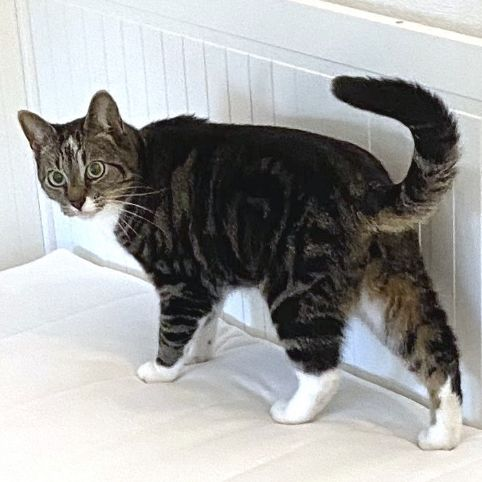
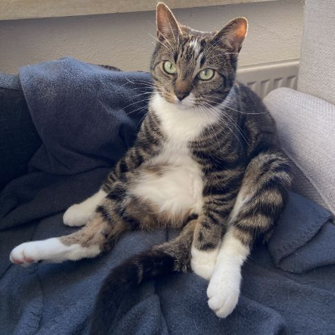
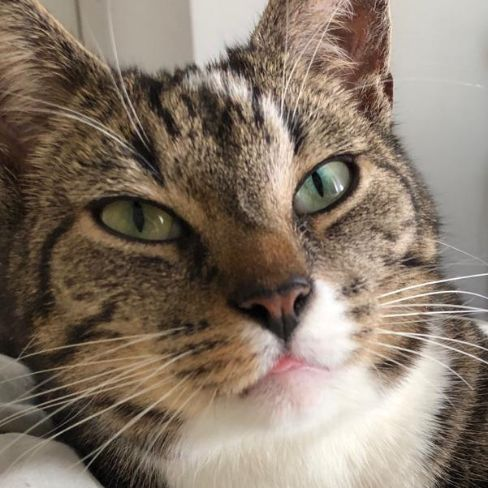
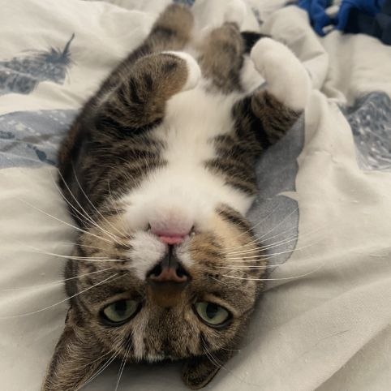
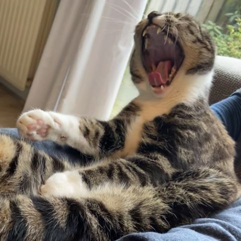
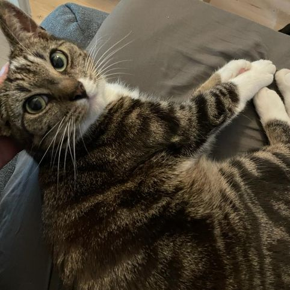
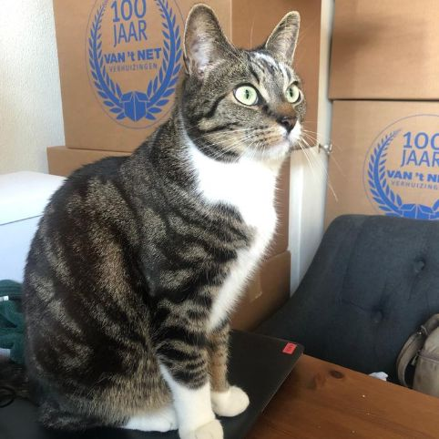
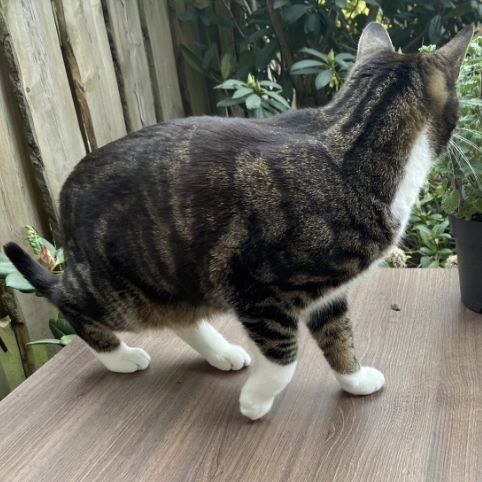

Help zoeken naar Aurora in Kattenbroek (Amersfoort)
Wat kan ik doen?
- Check je achtertuin, voortuin en (op en in) de schuur
- Kijk onder je auto en die van de buren
- Als je hem ziet, stuur dan een foto via Whatsapp
- Vertel over onze zoekactie aan je buren en vrienden
- Deel deze website

Kenmerken
- Cyperse kater van 5 jaar
- Witte nek, borst en buik
- Alle vier poten een witte sok
- Vermist sinds 8 januari
Details
- Op zijn voorhoofd zit een lichte streep
- Twee van zijn poten hebben een langere witte sokken
- Links op zijn snuit (rechts op de foto) is hij witter dan rechts
Gedrag
- Hij is een binnenkat en zal waarschijnlijk angstig verstopt zitten
- Aurora luistert niet naar zijn naam
- Hij zit ook graag op hoge plekken
- Hij kan flink schreeuwen (maar doet dit waarschijnlijk niet als hij bang is)
Aurora gespot?
- Stuur een foto via Whatsapp (06 170 363 54)
Aurora's laatst bekende locatie
Het Hallehuis 67, Amersfoort
Tips of vragen?
Tel: 06 170 363 54
Aurora gespot? Stuur een foto!
Gouden tip krijgt € 50 en eeuwige dankbaarheid.



